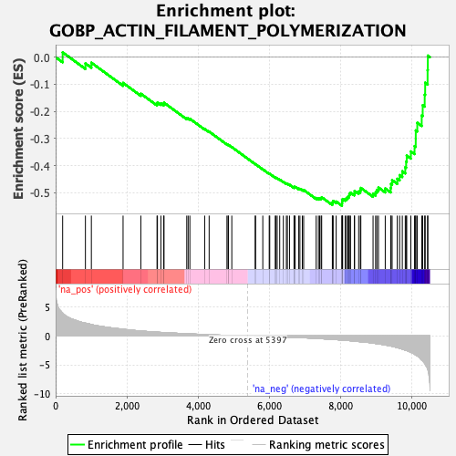
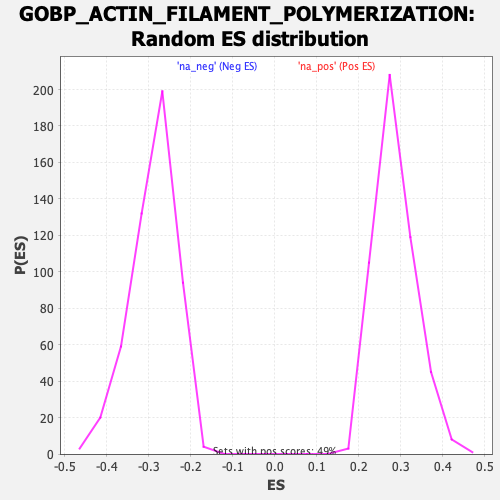

| Dataset | qlf.KOd4vsWTd4_gsea_score |
| Phenotype | NoPhenotypeAvailable |
| Upregulated in class | na_neg |
| GeneSet | GOBP_ACTIN_FILAMENT_POLYMERIZATION |
| Enrichment Score (ES) | -0.5483151 |
| Normalized Enrichment Score (NES) | -1.8929647 |
| Nominal p-value | 0.0 |
| FDR q-value | 0.026169967 |
| FWER p-Value | 0.515 |

| SYMBOL | RANK IN GENE LIST | RANK METRIC SCORE | RUNNING ES | CORE ENRICHMENT | |
|---|---|---|---|---|---|
| 1 | CTTN | 197 | 3.950 | 0.0178 | No |
| 2 | MKKS | 836 | 2.214 | -0.0229 | No |
| 3 | HAX1 | 1003 | 1.983 | -0.0204 | No |
| 4 | RDX | 1893 | 1.157 | -0.0949 | No |
| 5 | CAPG | 2392 | 0.856 | -0.1347 | No |
| 6 | DBNL | 2846 | 0.653 | -0.1721 | No |
| 7 | VASP | 2858 | 0.646 | -0.1672 | No |
| 8 | PRKCD | 2954 | 0.612 | -0.1706 | No |
| 9 | COTL1 | 3035 | 0.584 | -0.1729 | No |
| 10 | ARFGEF1 | 3042 | 0.581 | -0.1680 | No |
| 11 | SVIL | 3681 | 0.373 | -0.2258 | No |
| 12 | MYADM | 3720 | 0.365 | -0.2261 | No |
| 13 | CCR7 | 3768 | 0.353 | -0.2273 | No |
| 14 | ABL1 | 4184 | 0.246 | -0.2648 | No |
| 15 | CDC42EP4 | 4309 | 0.215 | -0.2747 | No |
| 16 | RASA1 | 4809 | 0.104 | -0.3216 | No |
| 17 | MTOR | 4841 | 0.099 | -0.3237 | No |
| 18 | LATS1 | 4853 | 0.096 | -0.3239 | No |
| 19 | PFN1 | 4945 | 0.080 | -0.3319 | No |
| 20 | CAPZA2 | 5601 | -0.033 | -0.3944 | No |
| 21 | MLST8 | 5612 | -0.034 | -0.3950 | No |
| 22 | BBS4 | 5815 | -0.066 | -0.4138 | No |
| 23 | WASL | 5995 | -0.096 | -0.4301 | No |
| 24 | CAPZA1 | 6010 | -0.098 | -0.4305 | No |
| 25 | WAS | 6165 | -0.127 | -0.4441 | No |
| 26 | DLG1 | 6179 | -0.129 | -0.4442 | No |
| 27 | GBA2 | 6219 | -0.138 | -0.4466 | No |
| 28 | ARPC5 | 6290 | -0.153 | -0.4519 | No |
| 29 | ARPC4 | 6392 | -0.176 | -0.4600 | No |
| 30 | RAC1 | 6477 | -0.195 | -0.4662 | No |
| 31 | CYFIP1 | 6505 | -0.200 | -0.4670 | No |
| 32 | NCK1 | 6565 | -0.213 | -0.4707 | No |
| 33 | ARPC1A | 6692 | -0.248 | -0.4804 | No |
| 34 | KANK3 | 6698 | -0.249 | -0.4786 | No |
| 35 | MTPN | 6724 | -0.256 | -0.4786 | No |
| 36 | SNX9 | 6820 | -0.280 | -0.4851 | No |
| 37 | SPTB | 6857 | -0.290 | -0.4859 | No |
| 38 | CAPZB | 6924 | -0.308 | -0.4894 | No |
| 39 | BAG4 | 6962 | -0.318 | -0.4900 | No |
| 40 | PRKCE | 7313 | -0.422 | -0.5196 | No |
| 41 | FLII | 7376 | -0.444 | -0.5215 | No |
| 42 | SSH3 | 7412 | -0.457 | -0.5206 | No |
| 43 | FCHSD2 | 7452 | -0.469 | -0.5200 | No |
| 44 | TRIOBP | 7468 | -0.478 | -0.5170 | No |
| 45 | PFN2 | 7767 | -0.599 | -0.5400 | No |
| 46 | ARPC5L | 7773 | -0.601 | -0.5349 | No |
| 47 | ARF6 | 7790 | -0.608 | -0.5308 | No |
| 48 | CDC42EP3 | 7875 | -0.642 | -0.5329 | No |
| 49 | ARPC2 | 8037 | -0.708 | -0.5417 | Yes |
| 50 | CYFIP2 | 8042 | -0.711 | -0.5355 | Yes |
| 51 | NCK2 | 8045 | -0.712 | -0.5291 | Yes |
| 52 | RHOA | 8056 | -0.717 | -0.5234 | Yes |
| 53 | TWF1 | 8127 | -0.750 | -0.5231 | Yes |
| 54 | SSH1 | 8166 | -0.769 | -0.5196 | Yes |
| 55 | HCLS1 | 8200 | -0.788 | -0.5155 | Yes |
| 56 | TMOD3 | 8233 | -0.810 | -0.5110 | Yes |
| 57 | GRB2 | 8245 | -0.814 | -0.5045 | Yes |
| 58 | MSRB1 | 8278 | -0.831 | -0.4999 | Yes |
| 59 | TMSB4X | 8386 | -0.897 | -0.5018 | Yes |
| 60 | HIP1R | 8391 | -0.908 | -0.4937 | Yes |
| 61 | MSRB2 | 8506 | -0.973 | -0.4956 | Yes |
| 62 | ARHGAP18 | 8553 | -1.004 | -0.4907 | Yes |
| 63 | PYCARD | 8567 | -1.010 | -0.4826 | Yes |
| 64 | EVL | 8910 | -1.237 | -0.5039 | Yes |
| 65 | NCKAP1L | 8982 | -1.307 | -0.4986 | Yes |
| 66 | VILL | 9016 | -1.330 | -0.4894 | Yes |
| 67 | ARPC3 | 9062 | -1.370 | -0.4810 | Yes |
| 68 | CORO1A | 9252 | -1.572 | -0.4845 | Yes |
| 69 | TTC17 | 9405 | -1.734 | -0.4830 | Yes |
| 70 | RICTOR | 9414 | -1.746 | -0.4675 | Yes |
| 71 | ARPC1B | 9445 | -1.790 | -0.4538 | Yes |
| 72 | ADD1 | 9590 | -2.024 | -0.4488 | Yes |
| 73 | FCHSD1 | 9656 | -2.133 | -0.4352 | Yes |
| 74 | PTK2B | 9731 | -2.282 | -0.4211 | Yes |
| 75 | SPTAN1 | 9814 | -2.456 | -0.4061 | Yes |
| 76 | BAIAP2 | 9838 | -2.491 | -0.3852 | Yes |
| 77 | TMSB10 | 9855 | -2.530 | -0.3632 | Yes |
| 78 | SPTBN1 | 9971 | -2.844 | -0.3478 | Yes |
| 79 | PREX1 | 10075 | -3.178 | -0.3282 | Yes |
| 80 | BIN1 | 10108 | -3.280 | -0.3008 | Yes |
| 81 | JAK2 | 10109 | -3.287 | -0.2702 | Yes |
| 82 | PSTPIP1 | 10152 | -3.463 | -0.2421 | Yes |
| 83 | TWF2 | 10276 | -4.178 | -0.2151 | Yes |
| 84 | CORO7 | 10304 | -4.351 | -0.1772 | Yes |
| 85 | GSN | 10360 | -4.752 | -0.1384 | Yes |
| 86 | PLEKHG2 | 10373 | -4.869 | -0.0943 | Yes |
| 87 | ADD3 | 10441 | -5.713 | -0.0476 | Yes |
| 88 | SSH2 | 10448 | -5.806 | 0.0058 | Yes |
